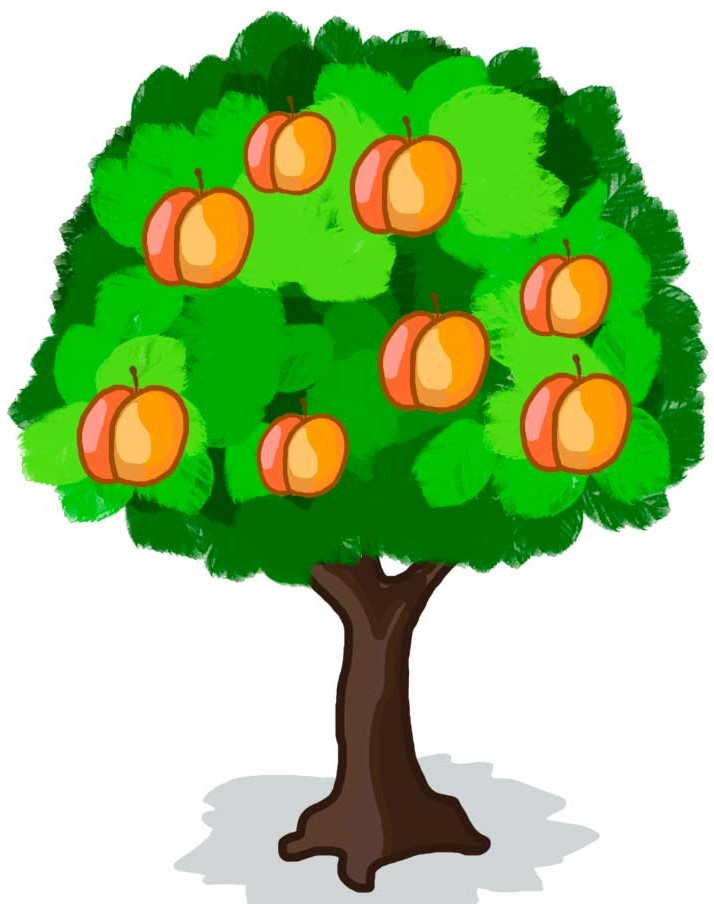
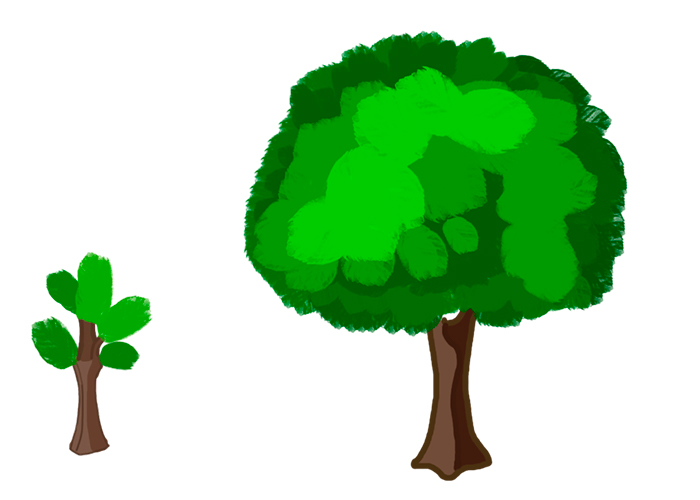
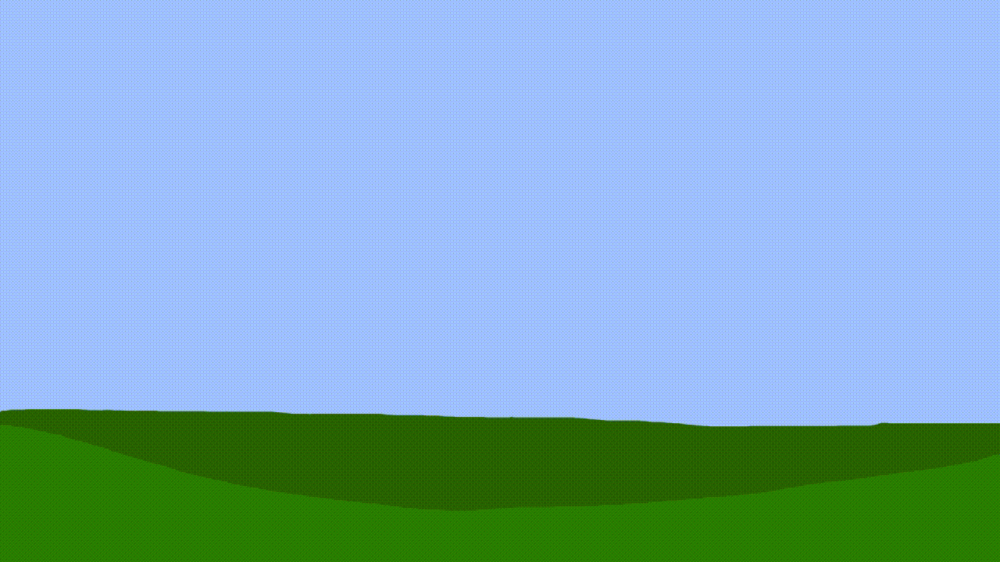
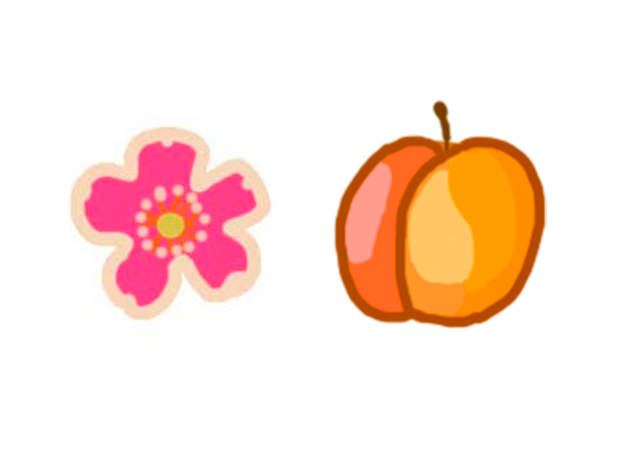

Персик
Персик (Prunus persica) — фруктове дерево з підроду мигдаль (Prunus). Споріднений з мигдалевим деревом, відрізняється від нього лише плодами. Персик — означає плід з Персії. Сама великоплідна порода з кісточковик. У багатьох сортів плоди бувають масою в середньому 150-200 г, відрізняються ароматом, приємним освіжаючим смаком і високими дієтичними властивостями. Велике розмаїття сортів дозволяє продовжити споживання плодів у свіжому вигляді до 3-4 місяців. Справжні персики мають опушені плоди з відділяючоюся і невідокремлюваних від м'якоті кісточкою. Розрізняють десертні - для вживання в свіжому вигляді - і консервні сорти з щільною м'якоттю плодів. Неопушені персики називають «нектаринами».
Посадка персикового дерева

Час посадки персика залежить від кліматичних особливостей вашої місцевості. Що південніше ви живете, то доцільніша буде посадка персика восени. У північних районах висаджувати саджанці у відкритий ґрунт краще навесні, щоб протягом весняно-літнього сезону деревця добре вкоренилися і встигли піти в ріст. Умови середньої смуги уможливлюють як весняну, так і осінню посадку персика, однак перевагу краще віддати останній.



Плоди та цвіт персика
Квітки розростаються ранньою весною перед появою перших листків; вони відокремлені або спарені, 2,5-3 см діаметром, з п'ятьма пелюстками рожевого кольору.
Плід — кісточковий, з єдиним великим сім'ям. Персик має гарний запах як цвіту, так і плоду. Плід кулястий, з борозенкою на одному боці. Шкірка персика або бархатиста (персики), або ж гладка (нектаринки) в різних культурних сортах рослини